회귀 분석 기본 가정
-Linearity(선형성)-
\(E(Y|X=x) = \mu_{yx} = \beta_0 + \beta_1 x\)
- \(X\)가 주어졌을 때 \(Y\)의 기대값은 일차함수 관계일 것이다.
-Homoscedastic(등분산성)-
\(Var(Y|X=x) = \sigma^2\)
- 분산은 \(x\)값과 상관이 없다.
-Normality(정규성)-
\(Y|X = x \sim N(E(Y|X = x), \sigma^2)\)
-Independency(독립성)-
\(\epsilon\)’s are mutually independent
단순선형회귀 모형
- model
\[y_i = \beta_0 + \beta_1x_i + \epsilon_i, i=1,2,\dots,n\]
\[\epsilon_i \sim N(0,\sigma^2):i.i.d\]
- 회귀계수(regression coefficient) (or 모수, parameter)
\(\beta_0\): 상수항 또는 절편
\(\beta_1\): 기울기
- 회귀직선, 회귀선: \(\hat y = \hat \beta_0 + \hat \beta_1 x\)
- y의 추정값, yhat, x의 기대값에 대한 추정량
회귀 모형 적합
1 산점도 그리기
2 모형 적합
\[y=\beta_0 + \beta_1 x + \epsilon, \epsilon_i \sim (0, \sigma^2),i.i.d\]
(1) 추정: \(\hat \beta_0, \hat \beta_1, \hat \sigma^2\)
- 추정 방법: LSE, MSE…
(2) 추론(가설검정)
회귀 모형의 유의성 검정(F검정) : \(H_0 : \beta_1=0\)
회귀 계수의 유의성 검정(t검정) : \(H_0 : \beta_0 = \beta_0^* (=0), \text{vs} H_1 : \beta_1 = \beta^*_1 (=0)\)
(3) 적합도 측정: \(R^2\)
(4) 회귀진단: 오차항의 가정 확인 등
Least Square Estimation (LSE)
- 오차제곱합
\[S= \sum_{i=1}^n \epsilon_i^2 = \sum_{i=1}^n \{y_i - (\beta_0 + \beta_1 x_i) \}^2\]
- 최소제곱추정량
\[(\hat \beta_0 , \hat \beta_1) = \text{argmin}_{\beta_0,\beta_1 \in \mathbb{R}} \sum_{i=1}^n \{y_i - (\beta_0 + \beta_1 x_i) \}^2\]
- Least square fit(회귀 직선)
\[\hat y ( = E(\widehat{Y|X} = x)) = \hat \beta_0 + \hat \beta_1 X\]
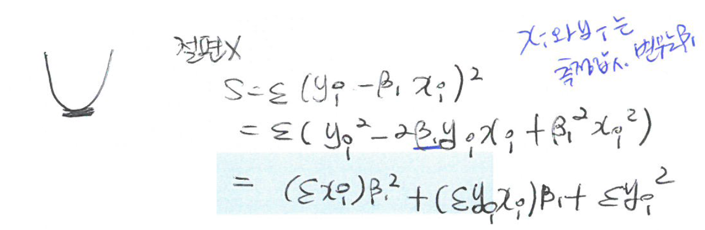
- 정규방정식 (normal equation)
\[\dfrac{\delta S}{\delta \beta_0}= -2 \sum_{i=1}^n (y_i - \beta_0 - \beta_1 x_i)\]
\[\dfrac{\delta S}{\delta \beta_1}= -2 \sum_{i=1}^n x_i (y_i - \beta_0 - \beta_1 x_i)\]
위 식이 0이 되는 해 값 찾기
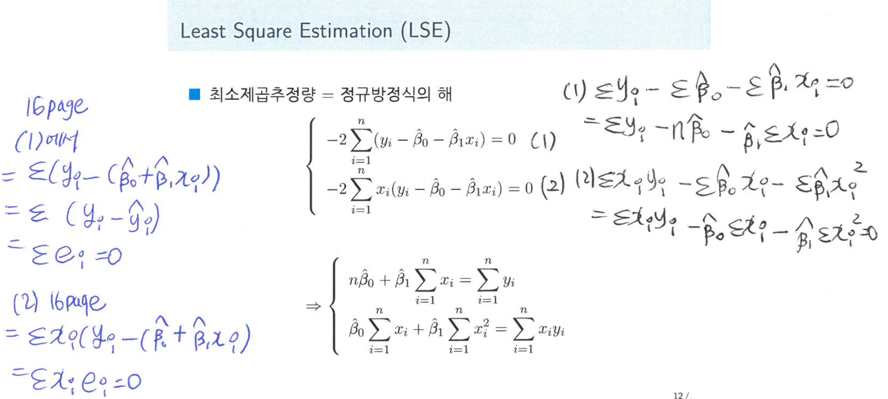
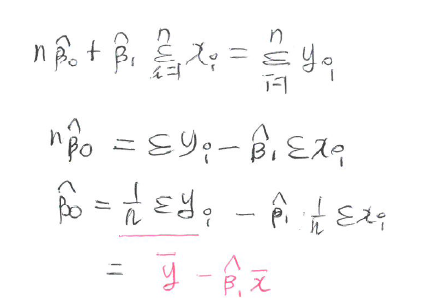
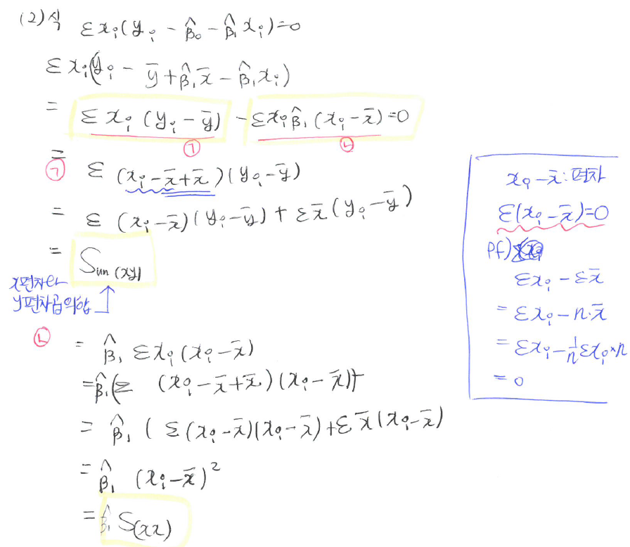
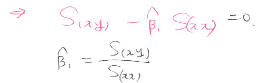
최소제곱추정량(LSE)
\[\hat \beta_1 = \dfrac{\sum_{i=1}^n(x_i - \bar x)(y_i - \bar y)}{\sum_{i=1}^n(x_i - \bar x)^2} = \dfrac{S_{(xy)}}{S_{(xx)}}\]
\[\hat \beta_0 = \bar y - \hat \beta_1 \bar x\]
Properties of fitted regression line
- 잔차(residual) : \(e_i = y_i - \hat y_i\)
1 잔차의 합은 0이다. \((\sum_{i=1}^n e_i = 0)\)
2 \(\sum_{i=1}^n e_i^2\) 은 최소값을 갖는다.
3 잔차의 \(x_i\)에 의한 가중합은 0이다. \((\sum_{i=1}^n x_i e_i = 0)\)
- 실제값과 추정된 회귀직선의 차이: 잔차
4 잔차의 \(\hat y_i\)에 의한 가중합은 0이다. \((\sum_{i=1}^n \hat y_i e_i =0)\)
\(=\sum(\hat \beta_0 + \hat \beta_1 x_i) e_i = \sum \hat \beta_0 e_i + \sum \hat \beta_1 x_i e_i = \hat \beta_0 \sum e_i + \hat \beta_1 \sum x_i e_i=0\)(위의 1과 3에 의해)
5 \((\bar x, \bar y)\)는 적합된 회귀직선 위에 있다.
- 차차차
편차: \(x_i - \bar x\)
오차: \(\mu - \hat \mu\) 실제값과 추정값의차(모수에서)
잔차: \(y_i = \hat y_i\) 오차항의 추정량
Estimation of error varianece
- 오차분선(\(\sigma^2\))의 추정
- 잔차(오차) 제곱합
\[SSE = \sum_{i=1}^n(y_i - \hat y_i)^2 = \sum_{i=1}^n e_i^2\]
- 평균제곱오차: \(MSE = \dfrac{SSE}{n-2}\)
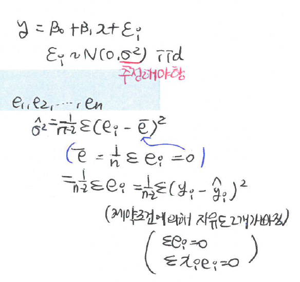
- 오차분산의 추정값: \(\hat \sigma^2 = MSE\)
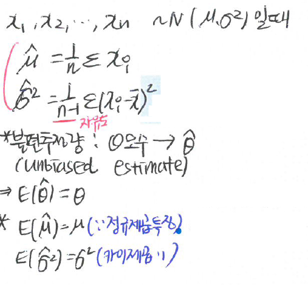
Decomposition of deviations
- 총편차의 분해
\(y_i - \bar y = (y_i - \hat y_i) + (\hat y_i - \bar y), \forall i\)
총편차(total deviation) = \(y_i - \bar y\)
추측값의 편차 \(\rightarrow\) 총편차 = \(\sum\) 잔차\(^2\) + \(\sum\)추측값의 편차\(^2\) : 부호 중요x, 절대값!!
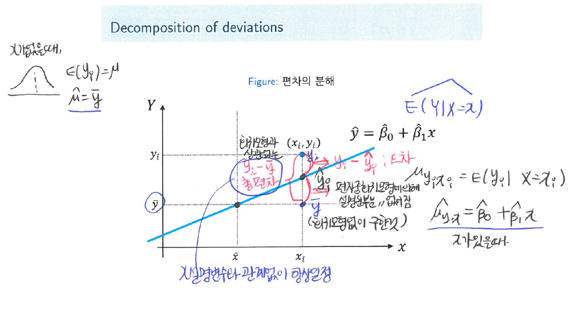
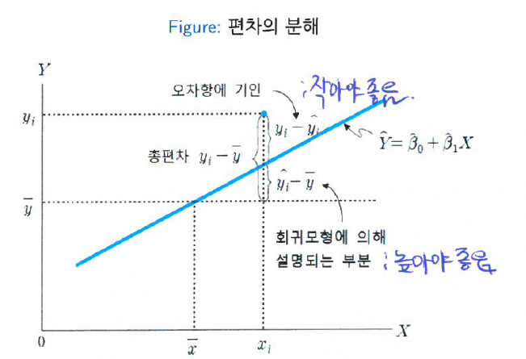
- 모형적합이 잘 됬다는 뜻은? 잔차는 작게, 회귀모형에 의해 설명되는 부분은 크게!
제곱합의 분해: SST=SSE+SSR
\[\sum_{i=1}^n (y_i - \bar y)^2 = \sum_{i=1}^n (y_i - \hat y_i)^2 + \sum_{i=1}^n(\hat y_i - \bar y)^2\]
| 제곱합의 종류 | 정의 및 기호 | 비고 |
|---|---|---|
| 총 제곱합 | SST = \(\sum_{i=1}^n (y_i - \bar y)^2\) | |
| 잔차제곱합 | SSE = \(\sum_{i=1}^n (y_i - \hat y_i)^2\) | 작아야 좋음 |
| 회귀제곱합 | SSR = \(\sum_{i=1}^n(\hat y_i - \bar y)^2\) | 커야 좋음 |
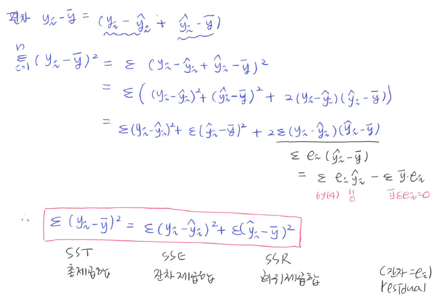
Coefficient of determination
- 결정계수
\[R^2 = \dfrac{SSR}{SST} = 1 - \dfrac{SSE}{SST}\]
회귀 직선의 기여율 (총변동 가운데 회귀직선으로 설명되는 변동의 비율)
\(0 \leq R^2 \leq 1\)
1에 가까울 수록 회귀에 의한 설명이 잘 됨을 뜻한
단순회귀인 경우, \(R^2 = r^2\)
비교할 때만 사용하는 상대적인 것..
상관분석
\(X, Y\) : random variable
모상관계수 \(\rho_{XY} = \dfrac{Cov(X,Y)}{\sqrt{Var(X)Var(Y)}}:= \dfrac{\sigma_{XY}}{\sigma_X \sigma_Y}\)
표본상관계수 \(\hat \rho_{XY} = r_{xy} = \dfrac{S_{xy}}{\sqrt{S_{xx}S_{yy}}}\)
\(-1 \leq \rho \leq 1, -1 \leq r_{xy} \leq 1\)
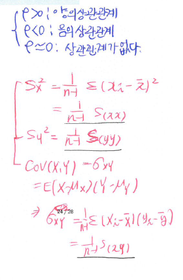
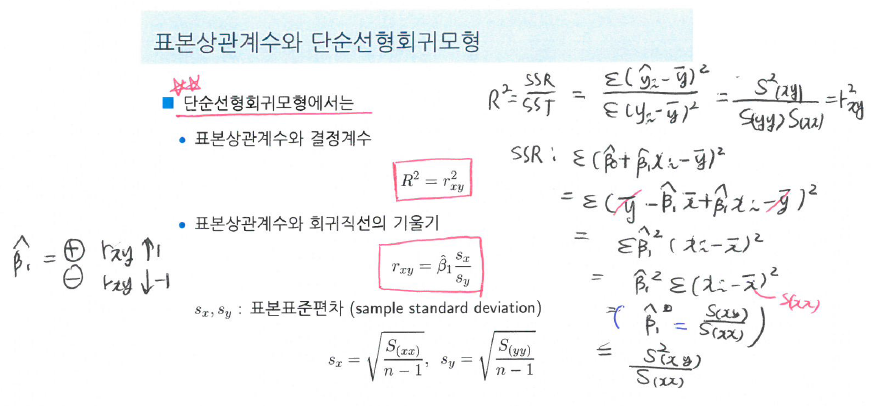
분산분석
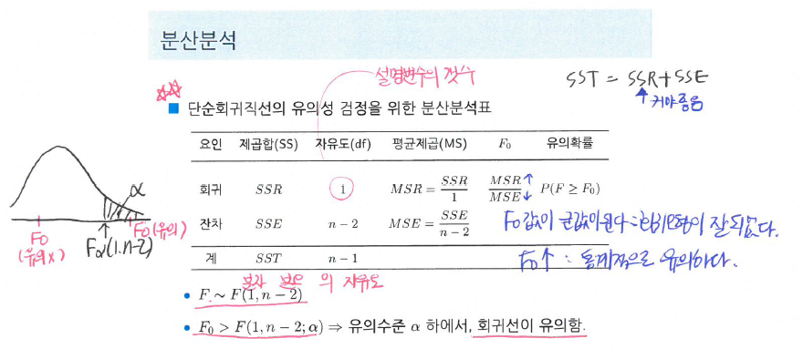